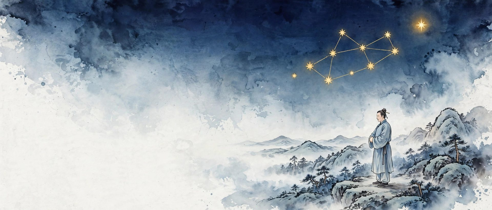
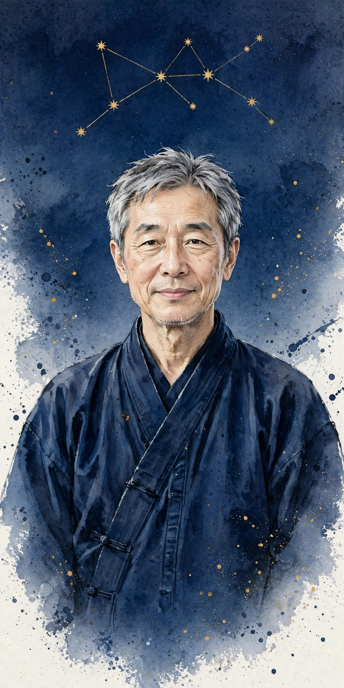

30年臨床の実績
45年武術の修行
500ページ超中医学の読みもの
200項目傷病名の中医学事典
北辰会について
北辰会は、気功の施術と養生の稽古、武術指導を行う会です。拠点は大阪に置き、施術と講習会は、ご希望の土地へ出かける「行脚」の形でもお受けしています。
北辰とは、北極星のこと。空の中心で動かない星です。身体にも、ぶれない中心が必要だと考えています。
3つの柱
施術、稽古、武術 ― 中心にあるのは、気の流れを読むことです。


施術メニュー
大阪・出張共通の料金です。
| 気功施術 60分 | ¥15,000 |
|---|---|
| 気功施術 90分 | ¥20,000 |
| 気功施術 120分 | ¥30,000 |
出張の場合、土地ごとに日程を組み、複数件をまとめてお受けします。開催の仕組みは「料金・出張の仕組み」をご覧ください。
代表プロフィール

抱元（ほうげん）／平賀辰人（ひらが たつひと）
鍼灸師登録販売者パーソナルトレーナー
臨床30年、武術歴45年。推拿に少林内功を、意拳に武術気功と養生気功を学び、焦国瑞気功に取り組んできました。鍼灸師として経絡の知識を土台にし、施術と稽古の両方を行っています。
出張・行脚のご案内

北辰会は、土地ごとに日程を組み、講習会・施術・武術指導をまとめてお届けする出張を行っています。開催のリクエストはお問い合わせフォームからお寄せください。日程が決まり次第、このサイトでご案内します。
現在：開催リクエスト受付中
注意事項
- 施術は医療行為の代替ではありません。通院中の方は、主治医の治療を優先してください。
- 妊娠中の方、体調に不安のある方は、ご予約の際にご相談ください。
- 感じ方には個人差があります。特定の症状の改善をお約束するものではありません。
読みもの ― サイトの歩き方
このサイトは、気功と中医学の読みものとしても作っています。
気功の基礎知識気功が初めての方の入口ページです。
傷病名から探す中医学事典病気との関係を中医学の角度から知りたい方へ（200項目）。
中医学用語集専門用語はこちらで確認できます。
気功と科学研究の到達点を正直に整理した、判断材料のページです。
コラム季節の養生を、毎日書いています。
経絡各論十二正経・奇経八脈と、全309の経穴を全件記載しています。
ページ右下の「🔍 検索」から、病名・用語・功法でサイト内を横断検索できます。